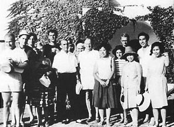
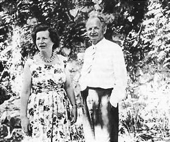
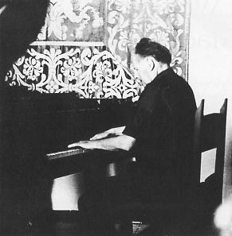

by Madeleine Hsu [Forte]
as reprinted in Clavier, October 1991
All photos except number 3 © 1963 by Madeleine Hsu.
Thursday, June 20
"Positano!"
In a deep and musical voice, the captain of the vaporetto announces to the passengers their arrival in paradise. The dream is over, surpassed by reality. A few meters from the shore, the vaporetto deposits us and our luggage into a small boat; the savage beauty of the Italian village is encrusted jealously between two rocks. Positano rises to a peak, all pink, yellow, green, and white, especially toward the western part of the beach. To the east, toward Amalfi, live the shepherds. A few villas are nestled there in solitude, among them Casa Virgilio and Casa Orfeo, domains of Wilhelm Kempff. He lives there for a portion of the summer with his family. I won't disturb his rest today; I'll wait until the first class.
A short visit to the painter of Positano, Zagoruiko. After tea, brewed in his samovar, he talks about his work, which is his life: paintings—remembrances of Russia and Greece, but above all, the warm and sparkling colors of Positano. We speak of Kempff, praising the man and the artist; his simplicity, his generosity towards us, the twelve pianists to whom he will devote his time for two weeks, helping us understand the work of Beethoven.
Zagoruiko met him here five or six years ago. I have an advantage over him: I was 12 years old when I met him, with emotion, for the first time. The morning after his recital I had to take my last exam in natural science. I was living in a village then, and after traveling all night, protozoa and other microcosmic inhabitants were far from my mind as I struggled before my blank sheet, against sleep and memory of Kempff's subtle harmonies.
After these confidences, I leave the artist exiled with a sketched canvas on the easel. I promise to return tomorrow morning with French cigarettes.
As I leave the road to climb a path traced among the rocks, two distant arms greet me. Frau Kempff has recognized me. Wilhelm Kempff is at her side, in a rust colored shirt (he loves that color; I notice it later in the salon). In his warm and simple manner, he takes my hand in his with a soft, supple touch.
Friendly introductions: his children, the secretary, the Italian gardener and his wife. He recalls that we are old friends: "For 12 years!"
For now he goes back to rest in Casa Virgilio. Lost among flowers and foliage, the forged iron door leads to the salon, which honors the Latin poet. On the mantel an antique clock of gilded bronze in the shape of a statue holds in its hand les Georgiques and I'Eneide; on either side white porcelain angels play cymbals. Behind the grand piano a fantastic Kokoschka gouache evokes the legend of Prometheus. On the white walls are engravings of ancient Latin cities, red chalk drawings, a reproduction of an angel playing the viola da gamba, and three organ pipes of green bronze in the shape of trumpets. The Roman armchair and the fringed hangings are rustcolored. The chair backs are lyre shaped; doors and windows are inscribed in curved lines, in the Italo-Romanesque style characteristic of this corner of southern Italy, which in ancient times knew the Saracen invasion. From the flowers in the field, from the wheat stalks in an amphora, a serene harmony, the simplicity of the earth, a secret preference of the illustrious pianist.
He let me work at the piano. "But not too much! You have to prepare yourself to listen."
His wise words are already significant: not mechanism, but music.
|  |
| Kempff (center, in shorts) with students at Positano. Author (wearing black hat) is second to his left; on his right is dancer Leonid Massine. |
Friday, June 21
After a long walk Kempff bathes and returns for lunch. At 1:00 p.m. everyone gathers under the flowered veranda, then rests until the 4:00 p.m. snack. Kempff then visits the pianists' lodging in the west.
Saturday, June 22
After a morning swim on the lonely beach with a new Norwegian friend and Kempff's children, we search Positano for a piano because there are only two instruments for twelve pianists.
Our first class begins at 5:00 p.m. After iced tea offered by Mme. Kempff on the terrace of Casa Orfeo, Wilhelm Kempff invites us to take our places around the two Bechsteins, ornamented with photos of Casals and Menuhin. Kempff tells us what the course will be: "Not a competition but a communion in the love of Beethoven." He speaks rapidly in German. A pianist plays the First Sonata; Kempff offers explanations, sits down at the piano, sings. The student plays again, and Kempff leads him into the sonata, using the other piano. "Espressivo!" he often demands insistently. He explains to us: "Beethoven continues along Haydn's line." "Beethoven didn't really name the movements until the end of his life; a prestissimo is actually only a presto."
Another student interprets the next sonata. Kempff listens religiously, installed in a middleaged violet chair. He closes his eyes and keeps his head in his hand; we all know that he is pleased. As he will do every day, Kempff gives us a recital of sonatas, eyes lost in another world. The class is finished. Auf wiedersehen!
With a handshake for each of us, he gives a luminous and profound look.
|  |
| Wilhelm and Frau Kempff at Positano |
Sunday, June 23
Even though we were serious yesterday, Kempff noticed that the Tyrolean sounds of the buses amused, even distracted us. From now on we will work from 9:00 a.m. to 1:00 p.m.: life awakens slowly in this corner. In the afternoon we will go to the beach; there is now no instrument on which to play, and we see ourselves condemned to leisure!
Against a background of distant bells, Kempff talks about the differences in dimensions of sound on the piano, the qualities of pianissimo, and their difficult gradation. During the break he has us visit the magnificent gardens of Casa Orfeo. Through the terrace we enter the second salon of Casa Virgilio, a museum of rare objects, almost all gifts from admirers: Japanese tapestries, antique Greek vases, a Japanese vase in plain marble (so heavy despite its smallness that it is difficult to lift), icons, ivories. From the small moorish window we see the island that Diaghilev willed to the dancer Leonide Massine, the Isola de Gallii; its first proprietor was Nijinsky. Kempff promises us a visit soon; for the moment we return to Beethoven. "He is a Michelangelo, a force of nature, a poor man who struggled between heaven and hell. He is the warmth of life. Don't think so much, let yourselves follow your instinct, with your feelings. Bach and Mozart were great musicians; Beethoven is a great personality. To play Beethoven is to live him, like a man—or a woman! Pity that unhappy caste of specialized pianists who haven't a single light on literature, painting, architecture, or life. Interpreting Beethoven is the unique occasion to understand the human voice. Think of his immense development: his first sonatas are pleasant, the last—veritable tragedies, which one undertakes with trembling!"
Suddenly Kempff changes expression; he amuses himself at trying, through gestures, to make himself understood by our timid and charming Japanese friend who speaks only her native tongue. Finally he goes to the piano: this is international.
Wednesday, June 26
The fifth lesson is really a recital by the illustrious pianist, as this pleases him. He brings us endlessly renewed relaxation, scattering the depth of his discourse with spiritual jokes. At 1:30, the time to leave for lunch, a pianist had sketched the theme of Schumann's Concerto; Kempff jumped to the second piano and by heart accompanied our friend, who by now was trembling with stage fright. It was only in fun, but he was in awe of the virtuoso.
Thursday, June 27
A thrilling scene occurs with the two first concertos; Kempff accompanies all from memory. "The improvised cadenzas of Beethoven were admirable compositions, according to his contemporaries, but he never wrote them down." Kempff plays his cadenzas. Before starting the second part of the class, our teacher plays the scherzo of Chopin's Sonata in B minor as an antidote! Then he changes the order of the program: we work on the Aurore Sonata for our Canadian colleague, who has to return soon to his country for a tour. He will have a complete view of the course: "Each one should profit equally."
To explain the joy that emanates from the finale of Op. 53, Kempff plays the theme of the Ninth Symphony. Often he plays entire works like this on a reminiscence; his profound knowledge is allied to the most refined fantasy.
In the afternoon we rented a car to visit Pompei. We didn't exchange four words during our discovery of this ancient world petrified at the height of life.
Friday, June 28
On the subject of literature surrounding the sonatas of Op. 31: "The first, in the Hummel style, is an homage to the master of the metronome, but it was impossible for Beethoven to play with a metronome; he would break it immediately."
Today Kempff throws himself into anecdotes. "While taking a walk Beethoven heard a little girl practicing an old master; he found his theme for the Sonata No. 2. As to the finale, the author Strindberg noted that one has to play it before interpreting his own writings."
He plays for us Bach's Toccata in D minor to demonstrate how one should play the finale of the Sonata Op. 54. He tells us about the pilgrimage that will take place tonight on the mountain: last year to see the procession he climbed, with effort, the 2,500 steps, with the aid of a flashlight. We show ourselves to be less courageous at the thought of a heroic return in the middle of the night.
Saturday, June 29
We work for a long time on the Appassionata, that chef d'oeuvre that everyone authorizes himself to play, poorly or well. "The difficulty consists in keeping the same tempo: a sole great current in the Op. 57."
This evening we all plan to contribute in offering the Kempffs a little concert. After ice cream, small cakes, and drinks on the terrace of Casa Orfeo, which is illuminated by Japanese lanterns, we see movies. Wilhelm Kempff's son-in-law becomes the projectionist, and our teacher is the commentator. Scenes of Italy, Germany, and Japan are shown, with applause for Mme. Kempff, surprised in a kimono near the lilies; our Japanese friends are obviously happy. I note in passing that the photographer Kempff is almost equal to the pianist.
Our concert begins at 11:00 p.m.; it will continue until daylight. The most original performance is Joachim Volkmann's: he improvises variations on a folk theme in the style of Bach, Handel, Beethoven, Schumann, Brahms, and Verdi. He remains impervious to the applause and laughter. Kempff warmly salutes this scholarly joke and laughs himself to tears. Then, with admirable modesty, he mixes with us to conclude our recreation, playing Rameau, Couperin, and Handel. It is very late. "See you soon... for our class!"
We approach the "grandes Sonates," Op. 90 (favorite of Furtwängler) and Op. 101. On this subject we listen like well-behaved pre-schoolers to our teacher reading extracts from Mendelssohn's Journal, where he recounts his arrival in Milan before its commandant, Baron von Ertmann, husband of the famous Dorothea. The second part of the class is dedicated to the Op. 106, "the most difficult sonata."
 |
| The author (center) with Wilhelm and Frau Kempff at Positano |
Interruption
So that we may visit the Greek temples of Paestum, the teacher grants an entire day of rest. At 8:00 in the morning we see from the boat that napkins are waving on the terrace of Casa Orfeo: Kempff, armed with enormous binoculars, wishes us a good day. We visit the museum and eat lunch on the steps of Neptune's temple. We take a collective sunbath on the vaporetto, frequently splashed with salt water as the boat rolls. Our friends from the Isle of Levant, more prudent, take refuge in the Japanese cabin. Our return is noisy: we turn on the ship's siren and whistle the theme from Op. 106, our rallying cry. Kempff answers us immediately; he has been waiting for us for 15 minutes.
Thursday, July 4
Before working on the fourth concerto Kempff talks to us about the mission of Beethoven: "The voice of God is in his music. Our century has been one of great inventions on the material plane; the spiritual has been relegated to the second plane. This period will be followed by a renovation of the spiritual. Youth the world over is interested in Bach, in Schumann, in Rameau. I deliver to you daily the message of Beethoven so that you can transmit it, you who came from such far flung countries as Germany, Canada, Estonia, France, Japan, and Norway."
In the afternoon Kempff made good on his promise of a visit to the Isola de Gallii, island of the dancer Massine; we admire the villa and the tower dedicated to the arts, built with a protruding balcony for future chamber music concerts. Artists already engaged for these concerts are Kempff, Casals, and Menuhin. After returning from the exploration of the island, Kempff plays a Chopin Impromptu on the old Johan Rubenstein piano. Mme. Massine quickly prepares us a light meal; then the Kempff nestful embarks joyously, in full strength, on the vaporetto.
Friday, July 5
Kempff speaks of Chopin, who never asked his students to play Beethoven sonatas for him: the ff was impossible for him. He plays for us the slow movement of the Chopin Sonata in B minor and gives us his explanation: "A young pianist can actually translate the character of Chopin's Sonata, whereas the Beethoven Op. 111 is a world of philosophy; years of life, of maturity are necessary. I undertake this last Beethoven trembling."
Saturday, July 6
The Emperor Concerto magnificently closes our course of interpretation. With a mischievous eye Kempff tells us: "It was hot here, I'm very glad of it!"
Then with emotion he says, "My dear colleagues, always stay the way you are now." Not a single word about music; he offers us a human message, like his teaching.
Sunday, July 7
We cannot leave Positano without visiting the hills of Anacapri. A single one perches in isolation and corresponds to that of Debussy: we see its trees filtered by the ocean mist, its blue green beach. We reserve our afternoon for the famous Villa San Michele of the writer Axel Munthe. Before 1949, the year the great humanist died, Kempff stayed there six weeks, celebrating each day the "mystery of music," as witness Munthe's grand piano, surrounded by religious statues and prayer desks. The numerous visits of tourists take nothing away from the strongly mystic atmosphere that emanates from this place.
Tonight about 20 guests attend Wilhelm Kempff's recital; the dancer Massine and his family, the painter Zagoruiko, the German archeologist of Positano, and some friends from Rome. The teacher has an emotional reunion with a former student, now the English consul at Naples. In great form, Kempff plays a Bach Chorale, some Scarlatti Sonatas, and Beethoven's Eroica Variations. During the intermission he invites us to the terrace to follow the satellite, to question the sky; he is well versed in astronomy. Then, addressing himself to our little group, he interprets Schumann's Davidsbündler Tänze. At first no one dares applaud.
Profiting from the silence, he quickly tells us, "The best things have an end. It is useless to speak after music; to all of you... goodbye!"
He disappears. Eyes fill, faces lower: the sadness of endings.
Positano: the name is heavy with meaning and forever whole in our artistic life.
|  |